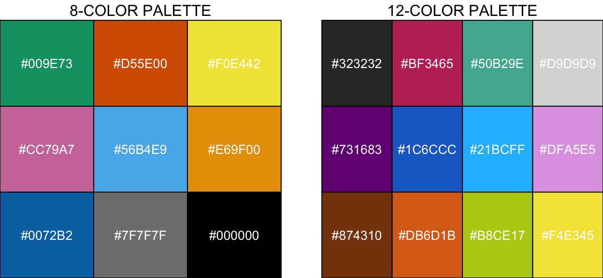

A brief description of the Website and the various workflows.
knitr::opts_chunk$set(echo = TRUE)
pacman::p_load(dplyr, DT, ggplot2, scales,
magick, gridExtra, grid,
install = FALSE, update = FALSE)
options(scipen=999)This website provides reproducible workflows for our study on the Bocas del Toro hypoxic event in 2017. We go through the steps used to process the raw 16S rRNA marker and metagenomic data. We describe the various tools used to analyze and interpret the data. We also provide access to all data, data products, and code. With this workflow you can generate the figures and tables from the paper as well as many additional data products.
The workflows are mainly written in R Markdown, meaning that they contain a mixture of Markdown text and R code. Anyone should be able to reproduce our results with just this workflow and the raw data.
The navigation bar at the top contains links to workflows, data/data products, and a variety of other useful information. The site itself has many dynamic components. For example, you can sort and scroll through most of the tables, tabular data can be download in different formats, and several figures expand when clicked.
On the bottom of each page you can find a link to the page’s source code or visit the main GitHub repo for the site, also linked at the bottom of each page. Should you find any problems, there is a link to the issue page of the source repository. References are also included as are DOI links to the publications where applicable. Data pertaining to individual workflows are also linked on the bottom of each page.
For access to all raw data and data products please see the Data Availability page. There you will find more details and links to the figshare project site and European Nucleotide Archive project page. Please also check at the bottom of individual workflow pages for access to related data.
You can access each step of the workflows by using the navigation bar at the top of the page. Below is a brief description of each step.
This section contains information on the various field analyses conducted in the study. You can access the workflow from the navbar above or this link. Please note, this section is a work in progress and will be updated with haste.
This section contains four separate workflows for processing and analyzing the 16s rRNA data set.
In this part we go through the steps of processing raw 16S rRNA read data including assessing read quality, filtering reads, correcting errors, and inferring amplicon sequence variants (ASVs). You can access the workflow from the navbar above or this link.
Next we go through the process of defining sample groups, creating phyloseq objects, removing unwanted samples, and removing contaminant ASVs. Various parts of this section can easily be modified to perform different analyses. For example, if you were only interested in a specific group of samples, you could change the code here to create new phyloseq objects. You can access the workflow from the navbar above or this link.
In this workflow, we compare the taxonomic diversity of normoxic v. hypoxic samples as well as diversity during and after the event. You can access the workflow from the navbar above or this link.
Finally, we wanted to understand how ASVs partitioned between normoxic and hypoxic conditions. We used Indicator Species Analysis (ISA) to identify Differentially Abundant (DA) ASVs across the two oxygen states and then visualized the results. You can access the workflow from the navbar above or this link.
We sequenced four samples for metagenomic analysis—two from Coral Caye and two from Cayo Roldan—both during and after the event. Coral Caye the control site (not impacted) and Cayo Roldan was the impacted site. This section contains seven workflows.
For the metagenomic analysis we largely leave the R environment and enter the anvi’o ecosystem. The first major step in our analysis of metagenomic samples from hypoxic and normoxic conditions is to setup our working environment. We do this in two steps. The first is to install the backbone of our computational operations, which consists of Miniconda and anvio. Next we build the annotation databases and install the associated tools. We provide complete details of these steps. You can access the workflow from the navbar above or this link.
Next we describe the various database we used to annotate the metagenomes. There are two main types of annotations we are interested in for this metagenomic project—taxonomic and functional—and there are many, many ways to accomplish both of these goals. This next section involves building the databases and installing any additional tools we need for annotation. You can access the workflow from the navbar above or this link.
Here we move to the processing part of the workflow, which involves the following: adapter trimming of raw data; quality filtering of trimmed reads; co-assembling QCed reads; mapping reads to the assembly; profiling the mapping results; merging profile dbs; classify reads and genes; annotating genes; and running HMM profiles. You can access the workflow from the navbar above or this link.
In this section of the workflow, we assess the QC & assembly results, Kraken short read taxonomy, mapping results, and contig classifications. You can access the workflow from the navbar above or this link.
In this section of the workflow we reconstruct metagenome assembled genomes (MAGs), first using CONCOCT for automated binning of the assembled contigs followed by manual refinement. You can access the workflow from the navbar above or this link.
In this section, we create a workflow to compare MAG02 with publicly available genomes. MAG02 was only found in the hypoxic sample. You can access the workflow from the navbar above or this link.
The objective of this section is to visualize all of the genes that have KEGG-KOfam annotations and assess their distribution across metagenomes. You can access the workflow from the navbar above or this link.
We will rely on color a lot to display information about diversity, distinguish between sample types, etc. Many of us have different abilities to perceive color and/or differences in color. Color blindness, also known as color vision deficiency, is a decreased ability to see color or differences in color. It is important that we use a) a relatively small color palette and b) a palette that is friendly to a variety of people.
Bang Wong has a paper in Nature Methods paper called Points of view: Color blindness (Wong 2011) where proposes a color-blind friendly color palette that uses contrasting colors that can be distinguished by a range of people. Consider that roughly 8% of people (mostly males) are color blind. So what do you think? Do you want Keanu Reeves to understand your figures or not?
Wong’s scheme is conservative—–there are only 8 colors. Martin Krzywinsk has a marvelous post on designing color friendly palettes that includes additional 12, 15, and 24 color palette schemes, which offer more options than Wong’s 8-color palette. We just need to be careful—–figures with too many colors can inhibit our ability to discern patterns. Limited color palettes like these force us to be more selective when deciding what information to target or how many groups to display.
Here are a few color palette examples. A light grey (#7F7F7F) was added to the 8-color palette. Shown here are the hex codes for these palettes but if you want the color names and sRGB codes you can download plain text versions of the palettes from Martin’s website here.
If you are interested in the R code used to make these palettes, click the arrow to expand the code block.
# Wong palette
wong_pal <- c("#009E73", "#D55E00", "#F0E442",
"#CC79A7", "#56B4E9", "#E69F00",
"#0072B2", "#7F7F7F", "#000000")
palette(wong_pal)
gs1 <- lapply(wong_pal, function(ii, wong_pal)
grobTree(
rectGrob(
gp = gpar(fill = ii)),
textGrob(ii, gp = gpar(col = "white"))))
gs1 <- grid.arrange(grobs = gs1, ncol = 3,
top = "8-COLOR PALETTE", right = "")
# 12 color palette
twelve_pal <- c("#323232", "#BF3465", "#50B29E", "#D9D9D9",
"#731683", "#1C6CCC", "#21BCFF", "#DFA5E5",
"#874310", "#DB6D1B", "#B8CE17", "#F4E345")
palette(twelve_pal)
gs2 <- lapply(twelve_pal, function(ii, twelve_pal)
grobTree(
rectGrob(
gp = gpar(fill = ii)),
textGrob(ii, gp = gpar(col = "white"))))
gs2 <- grid.arrange(grobs = gs2, ncol = 4,
top = "12-COLOR PALETTE", left = "")
grid.arrange(gs1, gs2, ncol = 2)

There is a great article on Coloring for Colorblindness by David Nichols that has an interactive color picker and recommendations for accessible palettes. This is also a really cool site for looking at color combinations. Both resources are highly recommended.
The source code for this page can be accessed on GitHub by clicking this link.
If you see mistakes or want to suggest changes, please create an issue on the source repository.
Text and figures are licensed under Creative Commons Attribution CC BY 4.0. Source code is available at https://github.com/hypocolypse/web/, unless otherwise noted. The figures that have been reused from other sources don't fall under this license and can be recognized by a note in their caption: "Figure from ...".